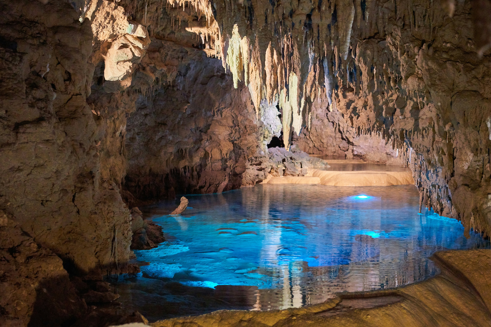

Пещера Гёкусэндо
Подземная река, каменные колонны и свисающие с потолка сталактиты открывают Окинаву со стороны её известнякового основания.
🇯🇵 Показать местному
沖縄県南城市玉城字前川1336
Что этоИзвестняковая пещера на территории Okinawa World.
ГлавноеПодземная река и плотные ряды сталактитов над дорожкой.
Не пропуститеОтражения натёков в воде и разницу каменных форм.
- Сталактиты — над ограждённой дорожкой.
- Подземную воду — у нижней части маршрута.
- Сросшиеся колонны — там, где натёки соединяют пол и потолок.
- На влажных ступенях держитесь за поручни.
- Не касайтесь натёков и оставайтесь на оборудованной дорожке.
История и подробности
В Гёкусэндо камень выглядит то как занавес, то как лес тонких игл. Дорожка проходит через освещённые залы, рядом течёт подземная вода. Сталактиты растут с потолка, сталагмиты поднимаются снизу; встречаясь, они образуют колонны. Вода здесь не декорация: именно она растворяет известняк и переносит минералы, из которых возникают новые натёки.
Пещера сформировалась в известняке, связанном с древними коралловыми рифами. Для посетителей открыта лишь часть системы — около 890 метров. Современная история изучения связана с экспедицией университета Эхимэ в 1967 году; в 1972 году пещеру открыли для туристов. Билет относится к комплексу Okinawa World, но ваше расписание сохраняет отдельную остановку именно в Гёкусэндо.
- 1967 — экспедиция университета Эхимэ исследует пещеру.
- 1972 — начинается туристическое посещение.